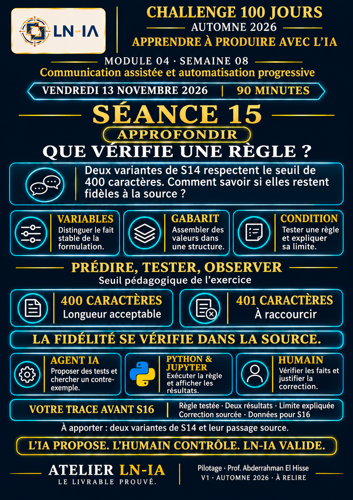

01 · Communiquer
Retrouver les messages, le JSON S15 et la correction finale.
Lire le guide communicationCommuniquer avec des sources, vérifier une règle, produire avec Python et expliquer sa correction.
Ouvrir l’atelier S16Suivre le parcours S13 → S16Votre dossier de progression pour S16. Les travaux repris de S15 sont conservés. Enregistrez désormais les nouvelles productions ici. Les exemples de démonstration disposent de leur propre espace.
Retrouver les messages, le JSON S15 et la correction finale.
Lire le guide communicationOuvrir les six cellules Python, comparer puis exporter.
Télécharger le notebook de travailLire un exemple complet avant de reprendre son projet.
Observer ou rejouer le cas fictif
Lire le résultat corrigéAfficher les supports et distribuer les fiches.
Ouvrir la fiche candidat PDFAjouter l’observation S16 en conservant les preuves précédentes.
Ouvrir le portfolio existantChoisir un contenu relu, son action et ses sources pour M05.
Lire le mode d’emploi généralL’atelier Web s’ouvre par double-clic. Le notebook s’exécute dans Jupyter ou VS Code avec un noyau Python 3. Les guides Markdown se lisent dans un éditeur de texte ; leur ouverture depuis le navigateur peut proposer un téléchargement.


